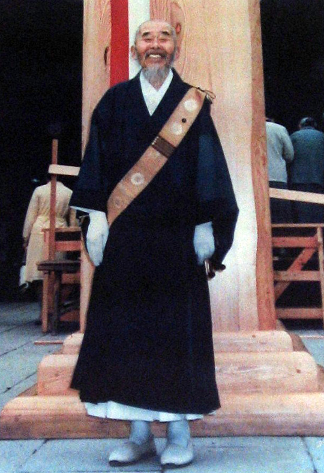

Rev. Kaisen Kanai
Rev. Kaisen Kanai is the father of Rev. Shokai Kanai and a grandfather of Rev. Douglas Shoda Kanai. Kaisen was born as a second son of a farmer in Nirayama, Japan in 1908. He left his home at the age of 16 to study in Tokyo. At first he wished to become a doctor, so he lived in a doctor’s home as a housekeeper. Before Kaisen become a medical student, his sponsor passed away. Later he became a lawyer. However through a religious experience, he decided to become a priest.
He was a head priest of a temple near Mt. Shichimen in Yamanashi Prefecture, but he bought a house in Tokyo to take care of many suffering people and also raised his eight children. The house in Tokyo was not registered as a temple; therefore, the house was sold after his death and divided by his wife and children.
His second son, Shokai Kanai, inherited all his altar items in the house. Half of the items were given to Rev. Shoroyo Tarabini who opened his temple in Milano, Italy and the rest are in Las Vegas now.
Although Kaisen has never been to America, Rev. Shokai Kanai honored him as a founder of the Nichiren Buddhist Kannon Temple of Nevada.